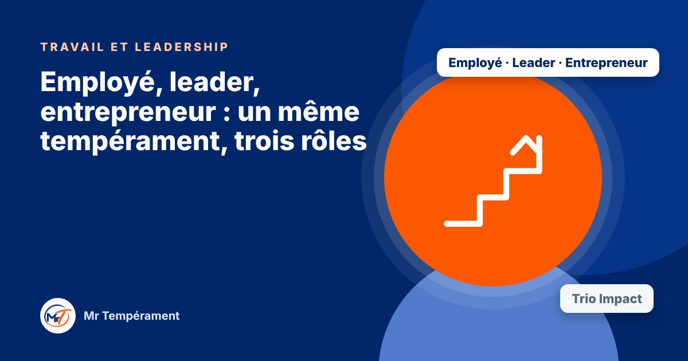

Employé, leader, entrepreneur : un même tempérament, trois rôles

Votre manière de travailler, de diriger et de créer ne se ressemble pas toujours, et c'est utile à savoir.
Un excellent employé n'est pas forcément un bon leader, et un bon leader n'est pas toujours un bon entrepreneur. Ce n'est pas qu'une question de compétences : chaque rôle sollicite votre tempérament différemment.
Au travail : s'intégrer et produire
En tant qu'employé, vous êtes jugé sur votre fiabilité, votre qualité et votre manière de collaborer. Votre tempérament influence votre rythme, votre besoin d'autonomie, votre réaction aux consignes et à la pression.
En leadership : décider et entraîner
Diriger demande de décider, de communiquer et de garder une équipe motivée. Chaque tempérament a ses atouts de leader et ses angles morts : la vitesse sans écoute, l'enthousiasme sans suivi, la douceur sans fermeté, la rigueur sans confiance.
En entrepreneuriat : oser et durer
Entreprendre demande d'oser, de vendre, de gérer des chiffres et de supporter l'incertitude. Il est rare qu'une seule personne ait tout, d'où l'intérêt de connaître ses points forts et de s'entourer de ceux qui complètent.
Pourquoi regarder les trois ensemble
Les trois rôles donnent une vue d'ensemble de votre impact : où vous êtes naturellement à l'aise, où l'effort est plus coûteux, et quel rôle mérite d'être protégé ou développé. C'est une aide précieuse pour une évolution professionnelle.
Pour aller plus loin
Le Bilan DISC 3 domaines, avec le trio Impact, explore votre tempérament au travail, en leadership et en entrepreneuriat, avec une synthèse du trio.
Découvrir le trio ImpactFaire le test gratuit